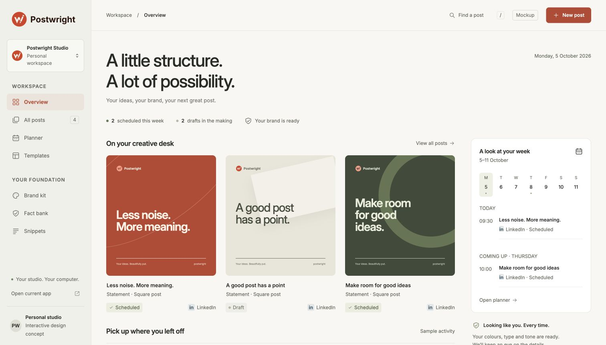
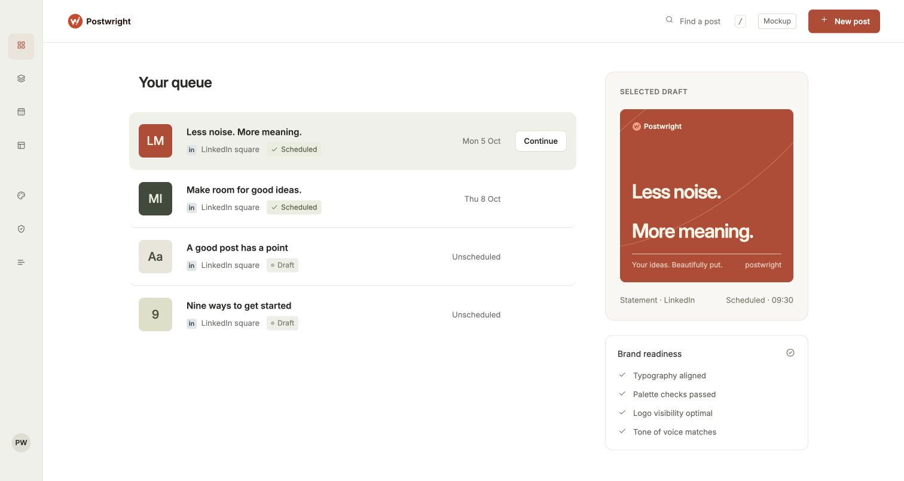
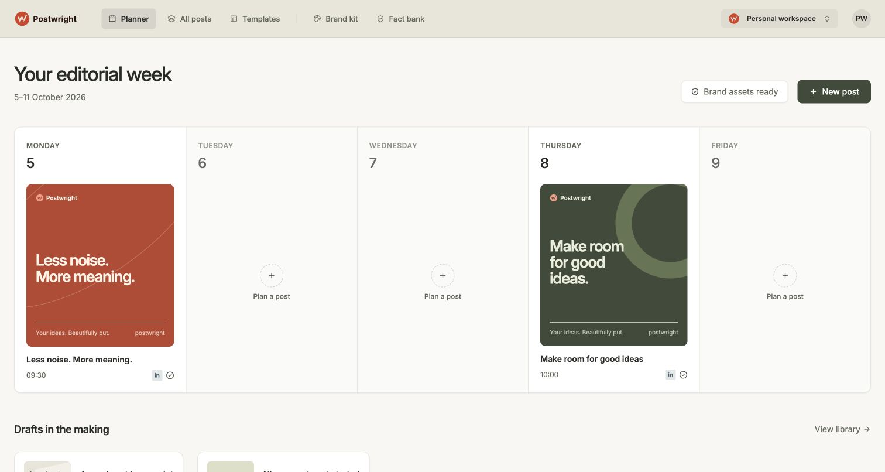
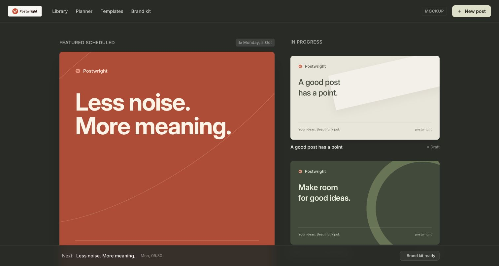

AWarm studio
Creative desk, generous space and a quiet weekly agenda.
Same content. Different priorities. Open a direction to take a closer look.

Creative desk, generous space and a quiet weekly agenda.

A clear work queue. Your next task, immediately in view.

Your publication rhythm leads. Drafts sit just below.

A dark canvas. Big artwork and an expressive creative mood.